User manual
Slipstream Live watches how much video your browser has loaded ahead and nudges the playback speed so you stay close to the live edge — without the video stopping to buffer. This manual covers installation, every setting, and what to do when something looks wrong.
1 Introduction
A live stream always plays a few seconds behind what the streamer is doing right now. That gap grows every time your connection hiccups, and it never shrinks on its own.
Slipstream Live measures how much video your browser has loaded ahead — the buffer — about 50 times per second, and nudges the playback speed up or down to close the gap without letting the video stall.
| Situation | What Slipstream Live does |
|---|---|
| You're behind, and plenty of video is loaded ahead | Speeds up slightly (1.25x) until you catch up |
| Loaded video is nearly gone | Drops to 0.15x and lowers the volume to avoid a freeze |
| Everything is fine | Nothing — plain 1.00x |
Once installed, no operation is required while you watch.
2 System requirements
| Manifest version | V3 |
| Chrome / Edge / Brave and other Chromium browsers | v128 or later |
| Mozilla Firefox | v140.0 or later |
| Firefox for Android | v142.0 or later |
| Supported sites | YouTube (including m.youtube.com and youtube-nocookie.com), Twitch (including player.twitch.tv), TwitCasting |
| UI languages | English, 日本語, 한국어, Deutsch, Español, Français, Português (BR), 简体中文, 繁體中文 — follows your browser's language setting |
3 Installation
3.1 Chrome / Edge / Brave / other Chromium browsers
Install from the Chrome Web Store.
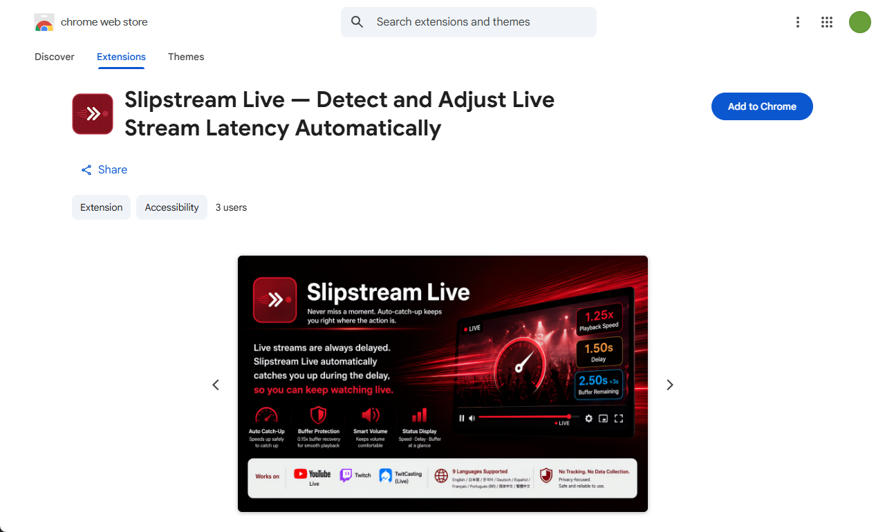
After installing, open the puzzle-piece menu in the toolbar and pin Slipstream Live so its icon is always visible.
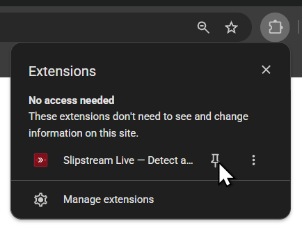
3.2 Firefox
Install from Firefox Add-ons.
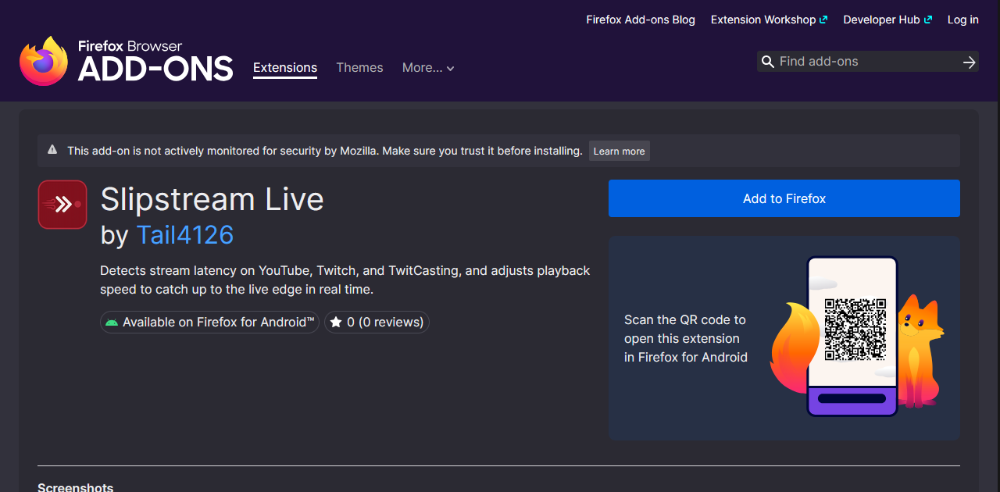
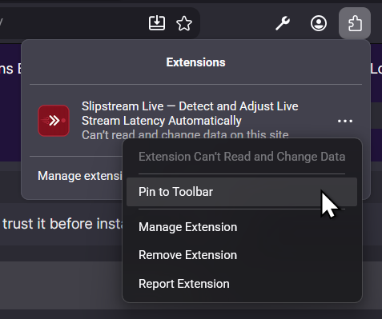
3.3 Installing from source (developers / manual installation)
Chromium browsers
- Download the repository as a ZIP and extract it (or
git cloneit). - Enter
chrome://extensionsin the address bar. - Turn on Developer mode with the toggle in the top-right corner.
- Click Load unpacked and select the extracted folder — the one containing
manifest.json.
Firefox — temporary install (disappears when Firefox closes)
- Open
about:debugging#/runtime/this-firefox. - Click Load Temporary Add-on….
- Select the
manifest.jsonfile inside the extracted folder.
Firefox — permanent install (Developer Edition / Nightly only)
- ZIP the contents of the folder.
- In
about:config, setxpinstall.signatures.requiredtofalse. - In
about:addons, click the gear icon → Install Add-on From File… → choose your ZIP.
3.4 Verifying the installation
- Open a live stream on YouTube, Twitch, or TwitCasting. A VOD or clip will not work.
- Click the Slipstream Live toolbar icon.
- In the All sites panel, turn on Show playback rate.
- A small
1.00xappears in the player's control bar, changing colour as Slipstream Live works.
4 Parts of the settings screen
Click the toolbar icon to open the settings popup. The same screen can also be opened as a full tab from your browser's extensions management page (Options).
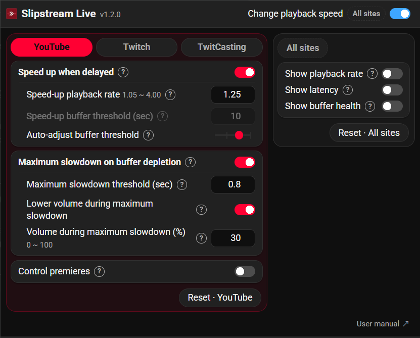
| No. | Part | Description |
|---|---|---|
| 1 | Icon and title | Clicking the icon opens the project page. The version number is shown next to the name. |
| 2 | Change playback speed | The master switch. Turning it off stops all control and all badges. Marked All sites. |
| 3 | Site tabs | YouTube / Twitch / TwitCasting. Each site stores its own values, and the tab for the site you are currently on is selected automatically. |
| 4 | Site settings panel | Speed-up settings and maximum-slowdown settings for the selected site. |
| 5 | ? buttons | Opens a plain-language explanation of that row. |
| 6 | Reset · (site name) | Restores only the currently selected site's settings to their defaults. |
| 7 | All sites panel | The three on-screen badge switches. |
| 8 | Reset · All sites | Restores the all-sites settings to their defaults. |
- Changes take effect immediately. There is no Save button.
- Rows that are not currently in use are greyed out. For example, Speed-up buffer threshold (sec) is disabled while Auto-adjust buffer threshold is set to Standard or Aggressive.
- On the Twitch tab only, an explanatory note about that site's larger default threshold appears at the bottom of the panel.
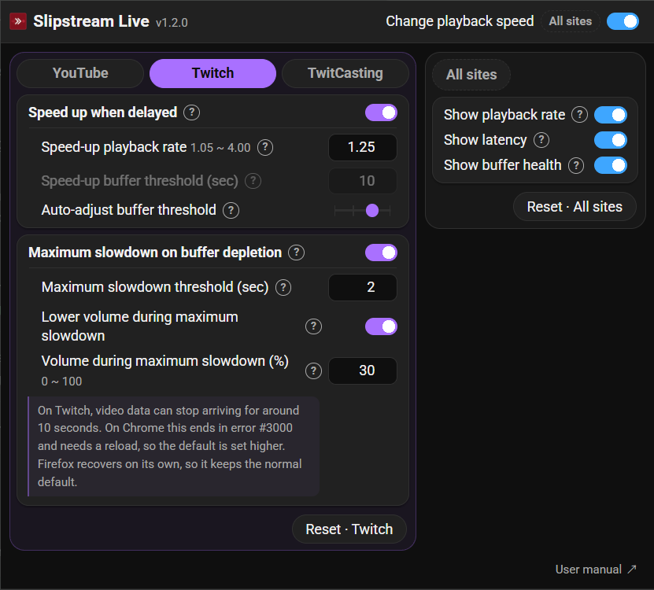
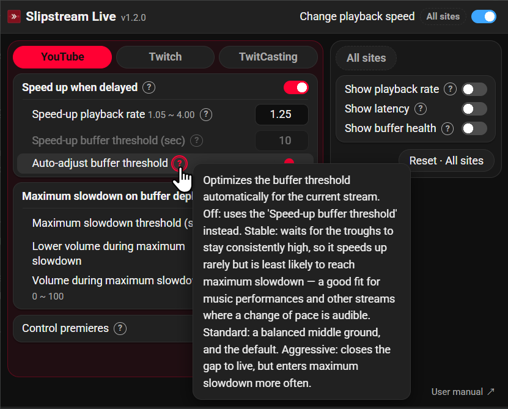
5 Reading the on-screen badges
All three badges are off by default. Turn them on in the All sites panel. They appear in the player's control bar; if that bar cannot be found, they fall back to a small dark strip in the top-left corner of the player.
| Badge | Example | Meaning |
|---|---|---|
| Playback rate | 1.25x | The actual current speed. The text colour shows which mode is active. |
| Latency | 1.50s | How far behind the live edge you are. While you are watching behind the live edge (DVR), the number is replaced by (DVR), because a latency figure has no meaning there. |
| Buffer health | 2.50s | Seconds of video loaded ahead of you. A +9s suffix means more video is loaded beyond a gap. |
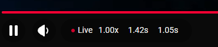
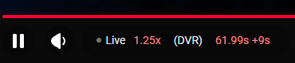
(DVR). Here the buffer holds 61.99 s, plus a further 9 s beyond a gap.6 The three control modes
| Mode | Priority | Badge colour | Speed | When it applies |
|---|---|---|---|---|
| Floor | Highest | Blue #83c1ff | 0.15x (fixed) | The buffer is about to run out. Emergency brake, plus volume ducking. |
| Speedup | Low | Red #ff8983 | 1.25x (default) | The buffer is comfortably deep and speeding up is actually gaining ground. Catches up to the live edge. |
| Normal | — | White #eee | 1.00x | Nothing to do. |
Higher-priority modes always win. The 0.15x floor speed is deliberately not configurable — it is a safety net, not a preference.
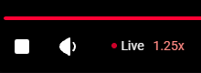
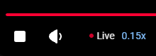
Each threshold carries hysteresis in the direction of the current mode, so speed and volume don't chatter when the buffer sits exactly on a boundary. The width is 0.2 s at every level. On top of that, starting a speed-up is rate-limited to once every 2 seconds. Nothing else is delayed — not leaving a speed-up, not entering Floor, not leaving it. Only the direction that increases intervention is treated cautiously; backing off and falling back to safety always take effect at once. Widening a threshold alone can't stop the chatter, because the value being compared against it moves as well.
When speeding up stops helping, it stops speeding up. Live video is only ever produced in real time, so once you reach the live edge there is no gap left to close. Holding a higher rate there just makes playback outrun each arriving segment and stall briefly, over and over, which lowers the effective speed rather than raising it. Slipstream Live compares the seconds the speed-up should have gained against the seconds it actually gained, and stands down when the latter falls below half the former. If you drift behind again, it goes straight back to catching up.
What Slipstream Live leaves alone
- Archived videos (VODs), clips, and ad breaks are never touched. Only live playback is controlled.
- TwitCasting low-latency streams are out of scope. They arrive over WebRTC, which has no read-ahead buffer to measure and ignores playback-rate changes entirely. Such streams are already close to real time, so there is nothing to catch up on.
- On YouTube and TwitCasting, if you choose a speed other than 1.00x in the player's own menu, Slipstream Live hands control back to you and stops adjusting. Set the speed back to normal to resume automatic control. Twitch has no such menu, so Slipstream Live stays in charge there — and also suppresses Twitch's own built-in catch-up so the two don't fight.
7 Settings reference
7.1 Site settings (stored separately per site)
| Setting | Range / step | YouTube | Twitch | TwitCasting | Description |
|---|---|---|---|---|---|
| Speed up when delayed | ON / OFF | ON | ON | ON | Master switch for catching up. |
| Speed-up playback rate | 1.05x–4.00x / 0.05 | 1.25x | 1.25x | 1.25x | How fast to catch up. Higher catches up sooner but consumes buffer faster. |
| Speed-up buffer threshold (sec) | 0.1–100.0 / 0.1 | 10.0 | 10.0 | 10.0 | Used only when Auto-adjust is Off. Speeds up once this much video is loaded ahead. |
| Auto-adjust buffer threshold | Off / Standard / Aggressive | Standard | Standard | Standard | Lets Slipstream Live decide when speeding up is safe. Recommended. |
| Maximum slowdown on buffer depletion | ON / OFF | ON | ON | ON | Master switch for the 0.15x emergency brake. |
| Maximum slowdown threshold (sec) | 0.0–10.0 / 0.1 | 0.80 | 2.00 (FF 0.50) | 0.30 | Drops to 0.15x while buffer health stays below this. |
| Lower volume during maximum slowdown | ON / OFF | ON | ON | ON | Ducks the audio while at 0.15x. |
| Volume during maximum slowdown (%) | 0–100 / 5 | 30 | 30 | 30 | A percentage of your current volume. 100 = no change, 0 = mute. |
FF = the default used on Firefox, which reports buffer levels differently. Twitch is the only site where it differs.
Why is Twitch's threshold so much higher? Twitch sometimes stops delivering video for around 10 seconds at a time. On Chrome that ends in error #3000 and needs a reload, so the default is set higher. Firefox recovers on its own, so it keeps the normal default.
7.2 The three auto-adjust levels
| Level | Trough window | Safety factor | Added margin | Hysteresis | Character |
|---|---|---|---|---|---|
| Off | — | — | — | 0.2 s | No estimation; uses Speed-up buffer threshold as-is. |
| Standard | 30 s | 5 | 0.3 s | 0.2 s | Long window, large factor — cautious. The default. |
| Aggressive | 5 s | 3 | 0.1 s | 0.2 s | Short window; reacts quickly to recent headroom and closes the gap harder. |
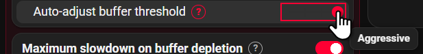
7.3 All-sites settings
| Setting | Default | Description |
|---|---|---|
| Change playback speed | ON | Master switch. Off = Slipstream Live does nothing at all. |
| Show playback rate | OFF | Shows the speed badge in the player. |
| Show latency | OFF | Shows how far behind the live edge you are. |
| Show buffer health | OFF | Shows how many seconds are loaded ahead. |
8 How it works
Every 20 milliseconds Slipstream Live measures buffer health — how many seconds of video are loaded and ready to play — and picks one of the three modes from that number.
The hard part is knowing when speeding up is safe. Buffer health is never steady: video arrives in chunks ("segments"), so the buffer jumps when a chunk lands and then drains until the next one. Plotted over time it looks like a sawtooth. A single reading taken at a peak would suggest plenty of room, leading to a speed-up that hits the very next trough with nothing left.
So instead of trusting one reading, Slipstream Live estimates statistically where the troughs are, over a window that adapts to each stream, and only allows a speed-up while that estimated headroom stays above the buffer level you have asked it to protect. Because the safety factor is large, headroom only opens up when the troughs are consistent — an unstable connection naturally suppresses speed-ups, and while there isn't enough data yet, Slipstream Live simply does nothing.
One shortcut sits above that test. Once buffer health passes 20 seconds — or your maximum slowdown threshold plus 10 seconds, whichever is higher — the trough estimate is no longer what limits the decision, so Slipstream Live speeds up without waiting for it, and returns to the statistical test below 15 seconds. This is what keeps it responsive right after you seek, when the buffer refills so quickly that the statistics are temporarily unusable. The shortcut applies to the automatic levels only.
All of that answers "is there enough buffer to speed up safely?" — a different question from "is there any point in speeding up?" Live video is produced in real time, so the buffer refills at 1.0x no matter how fast you play it. Once the cushion is spent you are at the live edge, and holding a higher rate there makes playback outrun each arriving segment and stall for a fraction of a second, over and over. Buffer health can't see this, because every stall lets the buffer refill. So Slipstream Live compares the gain the speed-up should have produced against the gain the playhead actually made, over a 12-second window, and stands down when the latter falls below half the former. It re-arms once latency grows past a threshold — one that scales with the site's segment length, so it means the same thing on sites whose baseline latency differs by more than tenfold — or after 30 seconds.
Badges are redrawn at most 10 times per second and all statistics are smoothed, so the speed does not visibly oscillate. When there is nothing to control, the loop drops to a 1-second watch mode instead of stopping, because ads play through the same video element and end without firing any media event. It also runs once immediately when the tab becomes visible again.
The full derivation — including how the trough is located without knowing the segment length — is in the project README.
9 Troubleshooting
It never speeds up.
Auto-adjust is deliberately cautious: on an unstable connection it decides that speeding up isn't safe. Try Auto-adjust buffer threshold → Aggressive first. If that still isn't enough, set it to Off and configure Speed-up buffer threshold (sec) manually — start around 15–20 seconds and work down.
It sits at 1.00x right after seeking, even with plenty of video buffered.
Make sure you are on version 1.1.0 or later. From that version, buffer health above 20 seconds allows a speed-up on its own, without waiting for the trough statistics — which the burst of fast loading that follows a seek would otherwise keep unusable for a while.
The badge says 1.25x but nothing feels faster, and the picture hitches every few seconds.
You've reached the live edge. Live video only arrives in real time, so beyond that point a higher rate adds stalls without adding speed. Version 1.1.2 and later detects this and stands down automatically — check your version first. If it persists, look at gain= in the debug log; FUTILE means the detection is working.
It drops to 0.15x too often.
Raise the manual threshold, or lower Speed-up playback rate so the buffer drains more slowly. Lowering Maximum slowdown threshold (sec) delays the brake, but increases the chance of an actual freeze.
Nothing happens at all.
Check that Change playback speed is ON, that you are on a live stream rather than a VOD or clip, and that you haven't selected a manual playback speed in the player's own menu.
Nothing happens on TwitCasting.
Check whether the stream is playing in low-latency mode. Low-latency streams arrive over WebRTC and are outside Slipstream Live's scope — turn low latency off in the player settings if you want Slipstream Live to manage the stream.
The badges don't appear.
They are off by default — turn them on in the All sites panel. If a site's control bar cannot be found, the badges fall back to a small dark strip in the top-left corner of the player.
Twitch video freezes or shows an error (unrelated to Slipstream Live).
Slipstream Live only adjusts playback speed, so a complete stop or an "Error #XXXX" code is almost always a Twitch or browser issue. Try these in order:
- Check status.twitch.com for an ongoing outage.
- Open the same stream in an Incognito window (
Ctrl+Shift+N,Cmd+Shift+Non Mac). If that fixes it, the cause is an extension or cached data. - Turn off all extensions, especially ad blockers — Twitch embeds ads directly into the video stream, so ad blockers are one of the most common causes of playback errors.
- Update Chrome via
chrome://settings/help. Official support covers only the two most recent versions. - Clear cache and cookies with
Ctrl+Shift+Delete(Cmd+Shift+Deleteon Mac).
If the screen still freezes or goes black, toggle Hardware acceleration in chrome://settings/system and restart the browser. Switch it back if it doesn't help — this is a diagnostic step, not a setting to leave changed.
Twitch's own resources are worth a look too: Playback Issue Troubleshooting, Supported Browsers, How to File a Video Playback Issue.
10 Collecting a debug log
If you need to report a problem, a debug log makes it far easier to diagnose.
- Open the stream page and press
F12to open the browser console — the page console, not the extension's own console. - Run the line below.
- Wait about 30 seconds while the problem is happening, then copy the output.
Once per second you will see the current mode, the real playback rate, buffer health, the short-term and trough statistics, the room calculation, the shortcut level ample, the accumulated excess consumption drift, the stationarity verdict calm, and the speed-up effectiveness gain.
- Buffer figures shown as
----mean the value is unavailable, usually because the browser reports an empty buffer. - A persistent
calm=NOmeans the stationarity gate is rejecting samples, soroomstays----as well. A speed-up can still happen while buffer health is aboveample. lat=is the latency the site reports.sdis the standard deviation over a 5-second window andjumpis the largest change seen in the last second. In practicesdstays at or below 0.11 andjumpbelow 0.2 while latency is steady. Ajumpthat stays well above that means the latency reading is noisy enough to re-arm speed-ups that were correctly stood down.gain=reads "seconds actually gained / seconds the speed-up asked for". When the right-hand figure passes 1 second and the left-hand one is under half of it,FUTILEis appended and speed-ups are being skipped.timer stoppedmeans the extension is switched off. During playback it should never appear.
11 Privacy
Slipstream Live makes no network requests whatsoever. It requests only two permissions:
storage— to save your settings locally on your device.activeTab— to see which supported site the popup was opened on, so it can select the right tab.
No analytics, no telemetry, no identifiers, no ads. Full details are in the privacy policy.
12 Support
| Purpose | Where |
|---|---|
| Bug reports | GitHub Issues — use the bug report template |
| Questions, feature requests, site support requests, translation feedback | GitHub Discussions |
| Security vulnerabilities | GitHub Security Advisories — report privately |
Please report vulnerabilities privately. A public issue is effectively a published exploit.
When reporting a bug, please include: the site, browser and version, extension version, OS, what happened, steps to reproduce, any settings changed from the defaults, and a debug log if possible.
13 License
Dual-licensed under the Apache License 2.0 or the MIT License, at your option.